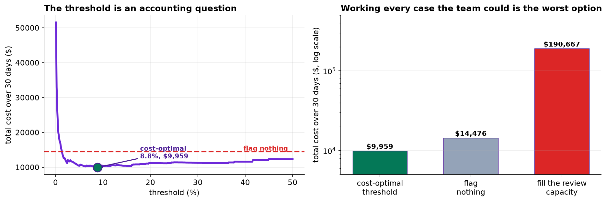

Fraud is the standard first machine-learning project, and the standard version of it teaches three habits that are wrong. This one keeps the setting and judges everything on what being wrong actually costs.
- Setting
- Four months of card transactions from one issuer: 119,556 usable purchases with amount, hour, tenure, recent activity, merchant risk and device signals, of which 318 were confirmed fraudulent.
- The question
- Which transactions should be held for an analyst to review, and which should settle?
- Why it matters
- A held transaction is a customer declined at a checkout. A missed one is money written off. The two errors cost different amounts, and the cost of a miss depends on the transaction, which rules out any threshold chosen from a curve.
- What we do
- Split by time, find the leak before fitting anything, run a bake-off the linear baseline wins, compare three answers to class imbalance on calibration rather than ranking, derive the threshold from the cost matrix, and check whether the review team's capacity is the constraint everyone assumes it is.
Oversampling, class weights and doing nothing produce PR-AUCs of 0.2985, 0.2981 and 0.2984. The first two predict an average fraud rate of 11.5 percent against an observed 0.32. And working every case the review team physically could costs thirteen times more than having no model at all.
The Costs, Before the Model
Operations supplied the numbers first, which is the only order that works. A false positive costs $4 of analyst time and an estimated $12 of customer annoyance. A missed fraud costs the transaction amount, written off, plus $25 of handling.
The cost of a miss depends on the transaction. A missed $8 coffee and a missed $2,000 laptop are not the same mistake. Every rule that picks a threshold from a curve, Youden's index, the F1 peak, the elbow, assumes the two errors have fixed prices. None of them can represent this, and the correct threshold has to be found by computing the actual bill.
After removing a duplicated export, 306 transactions with no geolocation and 138 zero-amount authorization holds, 119,556 purchases remain. The fraud rate is 0.27 percent, which makes accuracy meaningless: flagging nothing scores 99.73 percent and misses every fraud there is. Accuracy is not mentioned again.
Split by Time, and Find the Leak
The model will score transactions that have not happened yet, so it is validated on days 91 to 120 after training on days 1 to 90. A random split would let it learn from the future.
The warehouse table carries a column named chargeback_code_filed. It sits alongside the others,
it is populated, and it is 96 percent accurate about fraud. Fit with it and see what happens.
A chargeback code is filed weeks after the transaction, once a human has worked the case. At the moment the model must decide whether to hold the payment, it does not exist. Leakage does not look like an error. It looks like a triumph, and a PR-AUC of 0.98 on a fraud problem is not a result, it is a symptom.
The Bake-Off the Baseline Wins
| Model | ROC-AUC | PR-AUC | Lift over random | Brier |
|---|---|---|---|---|
| Logistic, additive | 0.9554 | 0.2752 | 86× | 0.00269 |
| Logistic + two interactions | 0.9604 | 0.2984 | 93× | 0.00264 |
| Gradient boosting | 0.9565 | 0.2584 | 80× | 0.00272 |
| Random forest | 0.9364 | 0.2496 | 78× | 0.00285 |
The linear model wins, and the ensembles were not handicapped. Two genuine interactions sit in the data-generating process, a new device on a card-not-present sale and a foreign merchant at three in the morning, so there is real non-additive structure for a tree to find. It cannot find it from 223 fraudulent transactions.
An analyst who suspects that a new device on an online purchase is worse than either signal alone can write that down in one line, and beats both ensembles by doing so. Flexible models need positives, not rows. Ninety thousand transactions containing 223 frauds is a small dataset wearing a large one's clothes, and the opener's rule about baselines is doing real work here rather than ceremonial work.
![Left: precision-recall curves for the logistic model with interactions, gradient boosting and random forest, with a dotted line at 0.003 marking what a random ranking achieves. The logistic curve is above the others across most of the range. Right: a log-log calibration plot. The untouched model's points follow the diagonal from 0.03 to 3 percent, while the oversampled and class-weighted models sit far to the right of it, predicting between 1 and 60 percent where the observed rate is under a tenth of one percent.](../assets/img/capstone-fraud-pr-calib.png)
Three Answers to Imbalance, and Only One Survives
Oversample the minority to parity, weight the classes, or leave the data alone and move the threshold. Same model, same split, same features.
| Approach | PR-AUC | Brier | Mean predicted | Observed | Ratio |
|---|---|---|---|---|---|
| (a) Oversample to 1:1 | 0.2985 | 0.05136 | 11.57% | 0.32% | 36.0× |
| (b) Class weights | 0.2981 | 0.05109 | 11.53% | 0.32% | 35.9× |
| (c) Untouched, tune the threshold | 0.2984 | 0.00264 | 0.23% | 0.32% | 0.7× |
The three PR-AUCs agree to three decimal places. They rank the transactions the same way, because all three fit the same model to the same information. What resampling and class weights change is not the ordering but the base rate the model believes in.
That is fatal here. Both put the average predicted fraud rate at about 11.5 percent when the truth is 0.32, a factor of thirty-six. A number like that cannot be multiplied by a transaction amount to produce an expected loss, and an expected loss is the only thing operations asked for. The remedy that does nothing is the one that leaves a probability behind.
If the downstream step only needs an ordering, a shortlist of the top 200 cases for instance, then resampling costs nothing and can help an optimizer that is struggling. The rule is not "never rebalance". It is: if anything downstream multiplies the output by a number, you need a probability, and rebalancing has taken it away. Recalibrating afterwards is possible and is a second step people rarely remember to do.
The Threshold Is an Accounting Question
With a calibrated probability and the cost matrix, the threshold is not chosen, it is computed. For every candidate, add up the analyst time, the customer annoyance and the money written off, and read off the bottom of the curve.
| Threshold | Flagged | Frauds caught | Missed | Total cost, 30 days |
|---|---|---|---|---|
| 0.2% | 2,196 | 85 | 10 | $35,011 |
| 1% | 887 | 67 | 28 | $16,976 |
| 5% | 251 | 44 | 51 | $10,402 |
| 8.83% (optimal) | 146 | 37 | 58 | $9,975 |
| 20% | 58 | 24 | 71 | $11,195 |
| 40% | 26 | 17 | 78 | $11,609 |
The six rows above are a coarse grid; a finer sweep puts the minimum at a threshold of 0.0883 flagging 145 transactions for $9,959, which is the figure quoted below. The difference is a single borderline transaction, and it is worth noticing that it barely matters.
Notice that the optimal policy misses 58 of the 95 frauds and is still the best available. That sentence is uncomfortable and it is correct: catching those 58 would require flagging thousands of legitimate transactions, and at $16 each that costs more than the fraud does. A fraud team measured on catch rate will reject this answer; a fraud team measured on cost will not.
The Capacity That Is Not the Constraint
The review team can work about 400 cases a day, which is 12,000 over the test window. That figure is usually stated as though it were the binding constraint. Test it.
Filling the queue is the worst of the three policies. It catches 93 of the 95 frauds, and 11,900 of those 12,000 reviews are of legitimate transactions at $16 each. The cost-optimal policy uses about one percent of the available capacity.
That is worth carrying into the operations meeting, because it inverts the usual conversation. The question is not "how do we use the capacity we have", it is "what is the cheapest number of reviews", and the answer here is far smaller than the team expected. The spare capacity is real and should be spent on something else.

What This Adds to the Earlier Fraud Case Study
Chapter 129 already built a fraud detector. That case study was an end-to-end walkthrough: load, explore, engineer features, fit several classifiers, compare them, explain the winner. This capstone assumes all of that and spends its whole length on the four decisions it did not interrogate.
| The earlier case study | This capstone |
|---|---|
| Reported ROC-AUC | Shows why ROC flatters at a 0.3% base rate and reports PR-AUC against it |
| Used SMOTE, as most tutorials do | Compares three remedies and finds they rank identically and differ 36-fold on the level |
| Chose a threshold of 0.5 | Derives it from a cost matrix in which one error's price varies per transaction |
| Used every available column | Finds the column that could not have existed yet |
Neither treatment is wrong. They answer different questions, and this one is the question a fraud operations lead actually asks.
What to Watch
- ✓Never report accuracy on a 0.3 percent outcome. Flagging nothing scores 99.73 percent, and a model that beats it by a decimal has said nothing.
- ✓Quote the base rate beside any PR-AUC. A PR-AUC of 0.30 is a 93-fold lift here and would be a disaster on a balanced problem. The number means nothing alone.
- ✓Rebalancing buys ranking and sells calibration. If anything downstream multiplies the output by a number, you needed the probability that rebalancing threw away.
- ✓Suspect performance that is too good. A PR-AUC of 0.98 on fraud is a symptom, not a result, and the first thing to check is whether a feature knows the answer.
- ✓Count the positives, not the rows. Ninety thousand transactions with 223 frauds is a small dataset, and flexible models lose to a linear one with two hand-written interactions.
- ✓A flag is a person declined at a checkout. The $12 in the cost matrix stands for a real harm, and it is not evenly spread: customers who travel, shop late or have just replaced a phone get flagged more, and none of that is wrongdoing.
- ✓Fraud is adversarial, so the model ages. These patterns were learned from days 1 to 90 and the people producing them adapt. Re-measure on a schedule rather than when somebody wonders.
Imbalance in Data Science & AI
| Where it appears | The same problem, in a different costume |
|---|---|
| Medical screening | A rare disease, a costly miss and a cheap-but-not-free false alarm, which is this chapter with different units |
| Content moderation | Rare violations, an enormous denominator, and a review queue whose capacity is mistaken for the constraint |
| Predictive maintenance | Failures are rare, and the cost of a miss is the machine rather than a fixed penalty |
| Ad and recommendation ranking | Click rates of a fraction of a percent, where calibration matters because the probability is multiplied by a bid |
| Any alerting system | Alert fatigue is the human cost of a threshold set by a metric rather than by what a person can read |
SMOTE, from Chawla and colleagues in 2002, is the resampling method most tutorials reach for, and the caution in this chapter applies to it in full: it changes the base rate and therefore the calibration. Davis and Goadrich showed in 2006 why precision-recall curves are the right instrument when negatives dominate, and Saito and Rehmsmeier made the same case again in 2015 because the field had not listened. On the repair side, Platt scaling and isotonic regression restore a probability after rebalancing, and King and Zeng give the prior-correction formula for the specific case of a rare-event logistic regression. The broader modern point is made by Grinsztajn and colleagues: on tabular data, tree ensembles usually win, but the sample sizes at which they start winning are larger than people assume.
The full project, step by step
The companion notebook reads the cost matrix before fitting anything, cleans three faults out of the warehouse export, splits by time, catches the leak, runs the four-model bake-off, compares the three imbalance remedies on calibration rather than ranking, computes total cost across the threshold range, and tests whether the review team's capacity is the binding constraint.
The dataset
(capstone-credit-card-fraud.xlsx) holds 120,400 transactions with a duplicated export,
geolocation sentinels and authorization holds left in, a leaking column left in deliberately, the analysis
plan agreed with operations before modeling, and the generating coefficients. Two written reports accompany
it: a plain-language brief for the fraud operations lead, and a
technical report covering the leak, the bake-off and the cost analysis.
🎓 Key Takeaways
- ✓The three imbalance remedies rank identically. PR-AUC 0.2985, 0.2981, 0.2984, and two of them predict 11.5 percent where the truth is 0.32.
- ✓Leakage looks like a triumph. One warehouse column took PR-AUC from 0.30 to 0.98, and it is filed weeks after the decision.
- ✓The linear baseline won. Two hand-written interactions beat both ensembles, because 223 positives is not enough for a flexible model.
- ✓The optimal policy misses 58 of 95 frauds. Catching them costs more than they are worth, which is uncomfortable and correct.
- ✓Review capacity is not the constraint. Filling it costs 13 times more than having no model; the best policy uses one percent of it.